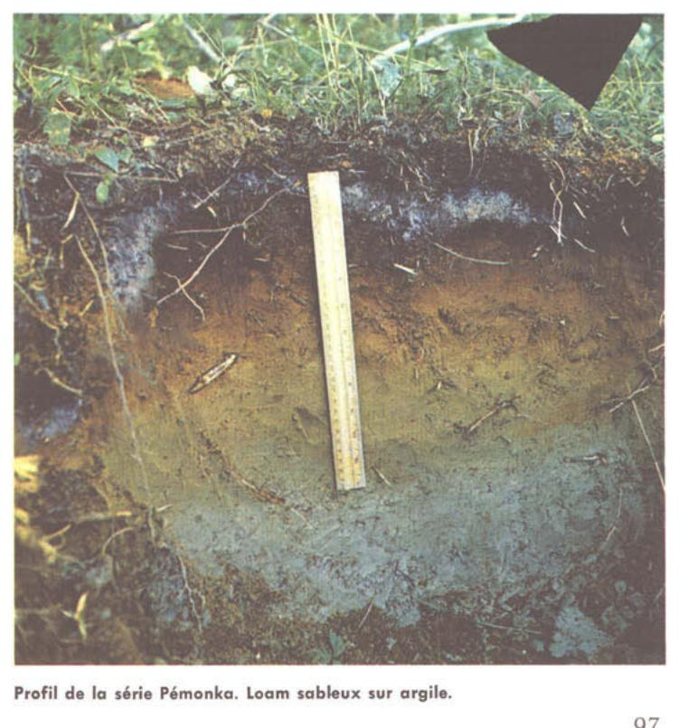

Identification & Caractéristiques Générales
La série Pémonka se développe sur des dépôts meubles glaciolacustres à texture fine, constitués de sédiments argileux et silteux stratifiés d'origine quaternaire, mis en place dans les bassins de sedimentation proglaciaire de la région du Lac-Saint-Jean. Ces sols occupent des positions topographiques de plaines ondulées à faiblement inclinées, caractérisées par des pentes généralement faibles oscillant entre 2 et 5 %. La morphologie de surface reflète une sédimentation calme en milieu subaquatique, recouvrant parfois des tills de fond ou des dépôts fluvioglaciaires profonds.
Le profil pédologique présente une différenciation nette des horizons, typique des sols à développement modéré sous couvert forestier boréal ou en zone agricole établie. La texture dominante est argileuse à lourde dans le solum, avec une proportion élevée de silts fins. Le drainage naturel est jugé modéré à imparfait, influencé par une perméabilité interne lente due à la compacité des horizons inférieurs et à l'absence de structure grossière favorable au percolation rapide. La réaction du sol (pH) est généralement acide à légèrement acide dans l'horizon supérieur, nécessitant un suivi de l'état acido-basique, tandis que la pierrosité en surface et dans le profil est quasi nulle à faible.
Sur le plan agronomique, les sols de la série Pémonka sont exploités principalement pour les cultures fourragères, les céréales et certaines grandes cultures adaptées aux conditions climatiques nordiques, bien qu'une proportion significative demeure sous couvert forestier ou en prairies permanentes. Les limitations majeures à la mise en valeur agricole résident dans la battance des limons, la sensibilité à l'érosion hydrique sur les pentes et la rétention d'eau excessive au printemps printanier retardant les travaux aratoires. L'installation d'un réseau de drainage souterrain (tuyauterie) est fréquemment requise pour réguler le régime hydrique, combinée à des apports calcaires réguliers pour corriger l'acidité et à des pratiques culturales minimales visant à préserver la structure de la surface.
Caractères Distinctifs & Morphologie Génétique (Comté de Chicoutimi — Page 84)
- Topographie : horizontale à subhorizontale
- Drainage : mauvais
- Grand-groupe génétique : gleysol
- Degré d'érosion : nul
- Classe d'utilisation : 4
- Association géographique : séries Proulx, Argentenay, Gauthier
- Végétation naturelle : trembles, bouleaux, saules; joncs, carex, etc.
Classification Taxonomique & Environnement Pédologique
| Ordre Pédologique | Gleysolique |
|---|---|
| Grand Groupe (SCSS) | Gleysol orthique |
| Sous-Groupe Taxonomique | Gleysol orthique |
| Famille Pédologique | Sableuse, mixte sableux, neutre |
| Mode de Dépôt Parental | Fluviatile sur marin |
| Classe de Drainage Naturel | Mal drainé |
| Régime Thermique & Humidité | Frais / Subaquique |
Description Morphologique du Profil Type
Séquences génétiques des horizons pédologiques caractérisant le profil type représentatif de la série Pémonka :
Profil forestier / boisé — Comté de Chicoutimi
✓ Source : Comté de Chicoutimi — Page 84Couleur Munsell : Non précisée
Structure & Consistance : Polyédrique à granulaire
Description morphologique : Tourbe fibro-limoneuse, tourbe brute noire charbonneuse; pH: 4.9.
Couleur Munsell : 10YR 7/1
Structure & Consistance : Polyédrique à granulaire
Description morphologique : Sable gris pâle (10YR 7/1-7/2)
Couleur Munsell : 10YR 6/4, 2.5YR 3/4, 7.5YR 5/8, 7.5YR 5/4
Structure & Consistance : Polyédrique à granulaire
Description morphologique : Sable brun jaune clair (10YR 6/4); avec placages brun-rouge foncé (2.5YR 3/4) et taches brun vif (7.5YR 5/8) à brun (7.5YR 5/4); pH: 5.9.
Couleur Munsell : 10YR 6/6, 10YR 6/4, 2.5YR 5/6
Structure & Consistance : Polyédrique à granulaire
Description morphologique : Sable jaune-brun (10YR 6/6) avec taches brun jaune clair (10YR 6/4) dominantes et taches rouille de couleur rouge (2.5YR 5/6); pH: 6.1.
Couleur Munsell : 10YR 6/2, 10YR 6/8
Structure & Consistance : Polyédrique à granulaire
Description morphologique : Sable gris-brun clair (10YR 6/2) à jaune brun (10YR 6/8) avec taches de rouille; pH: 6.5.
Profil représentatif — Pédologie de la région du Lac-Sa
✓ Source : Pédologie de la région du Lac-Sa — Page 97Couleur Munsell : Non précisée
Structure & Consistance : Polyédrique à granulaire
Description morphologique : Tourbe fibro-limoneuse; tourbe brute noire, charbonneuse; pH: 4.9.
Couleur Munsell : Non précisée
Structure & Consistance : Polyédrique à granulaire
Description morphologique : Sable gris pâle.
Couleur Munsell : 10YR 6/4, 2.5YR 3/4, 7.5YR 5/8, 7.5YR 5/4
Structure & Consistance : Polyédrique à granulaire
Description morphologique : Sable brun-jaune pâle clair (10YR 6/4) avec placages brun-rouge foncé (2.5YR 3/4) et taches brun vif (7.5YR 5/8) à brun (7.5YR 5/4); pH: 5.9.
Couleur Munsell : 10YR 6/6, 10YR 6/4, 2.5YR 5/6
Structure & Consistance : Polyédrique à granulaire
Description morphologique : Sable jaune-brun (10YR 6/6) avec taches brun-jaune clair (10YR 6/4) dominantes et taches rouille de couleur rouge (2.5YR 5/6); pH: 6.1.
Couleur Munsell : 10YR 6/2, 10YR 6/8
Structure & Consistance : Polyédrique à granulaire
Description morphologique : Sable gris-brun clair (10YR 6/2) à jaune-brun (10YR 6/8) avec taches de rouille; pH: 6.5.
Couleur Munsell : Non précisée
Structure & Consistance : Polyédrique à granulaire
Description morphologique : Argile grise.
Profils Photographiques & Planches de Terrain
Documents iconographiques, figures pédologiques et coupes de terrain documentées dans les mémoires d'inventaire pour de la série Pémonka :

Propriétés Physico-Chimiques & Analyses de Laboratoire
Données Analytiques de Laboratoire
Aucune analyse physico-chimique quantitative de laboratoire (granulométrie par sédimentométrie, pH H₂O/CaCl₂, matière organique Walkley-Black ou bases échangeables) n'a été consignée pour cette unité dans les archives historiques numérisées ou les bases contemporaines EESSAQ/MAPAQ.
Particularités Régionales, Phases & Variantes Pédologiques
Déclinaisons régionales, faciès texturaux, phases d'érosion ou de pierrosité et variantes cartographiées par étude pour de la série Pémonka :
| Étude Régionale | Symbole | Appellation / Phase / Variante | Différenciation avec la série type (Analyse pédologique) |
|---|---|---|---|
| Comté de Chicoutimi | Pk |
Pémonka sable | Modalité modale de référence (type de base de la série). |
| Pédologie de la région du Lac-Saint-Jean | Pk |
Pémonka sable | Conforme à la série type de référence (caractéristiques texturales et drainage identiques). |
Distribution Pédo-Paysagère & Représentativité Cartographique (Couverture PPS 2026)
- Argentenay sable à sable loameux (AAY) — co-occurrente dans 13 polygone(s)
- Pelletier sable (PLI) — co-occurrente dans 13 polygone(s)
- Labarre loam argileux (LBR) — co-occurrente dans 9 polygone(s)
Aptitudes Agronomiques, Hydropédologie & Conservation des Sols
Indicateurs Hydropédologiques & Vulnérabilité à l'Érosion (BDHP 2026)
Interprétation BDHP : Potentiel de ruissellement modérément élevé. Faible taux d'infiltration, présence d'horizons ralentissant le drainage descendant.
Classement selon l'Inventaire des Terres du Canada (ITC / CLI) : Classe 3w.
- Potentiel agricole : Terroir adapté aux cultures régionales selon la texture dominante et la régie de drainage.
- Contraintes majeures : Mal drainé. Risque d'engorgement temporaire ou d'excès d'eau printanier.
- Gestion & Aménagement : Drainage souterrain ou superficiel préconisé sur les terres planes. Chaulage et apport organique régulier selon les bilans agronomiques.
- Cultures adaptées : Grandes cultures (maïs, soya, céréales), prairies fourragères et cultures maraîchères selon le contexte géomorphologique.